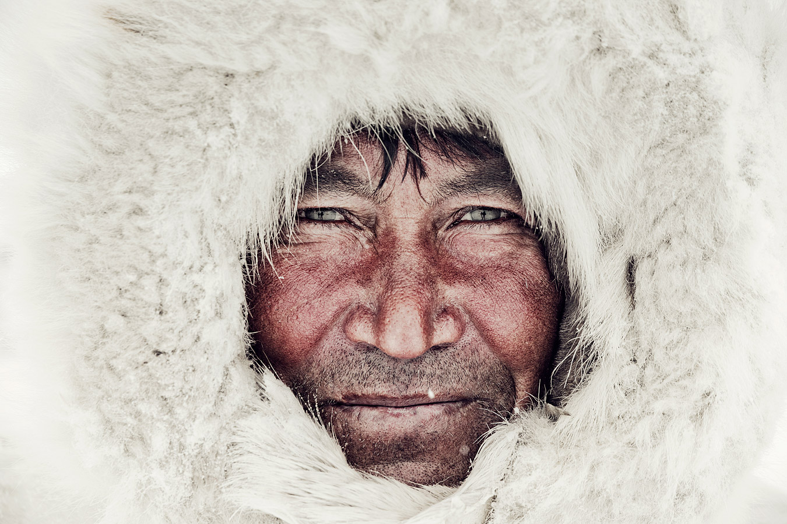

Antes de que desaparezcan

Autor: Jimmy Nelson
Año de publicación: 2011
Comentario del autor:
Existe la pureza de la humanidad. Esta allí, en las montañas,
los campos de hielo, la selva, a lo largo de los ríos y en los valles.
Crítica:
Jimmy Nelson encontró a los últimos miembros de las tribus y los observó.
Sonrió y bebió sus brebajes misteriosos antes de sacar su cámara. Compartió lo que la gente real comparte: vibraciones, invisibles
pero palpables. Se ajustó la antena a la misma frecuencia que la de ellos. La confianza creció, y logró que comprendan y compartan
la misión desarrollada: el mundo nunca debe olvidar las cosas como fueron.